PASS 1p 1752b
PASS 1p 767b
PASS 1p 228b
PASS 1p 119b

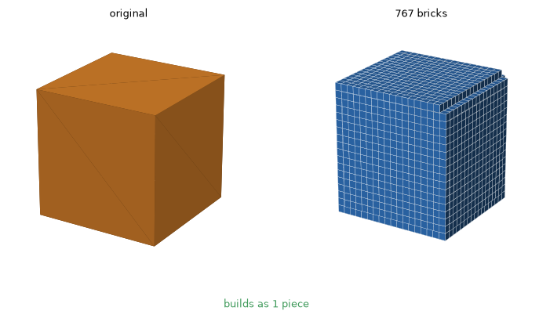
PASS 1p 721b
PASS 1p 332b
PASS 1p 111b
PASS 1p 49b

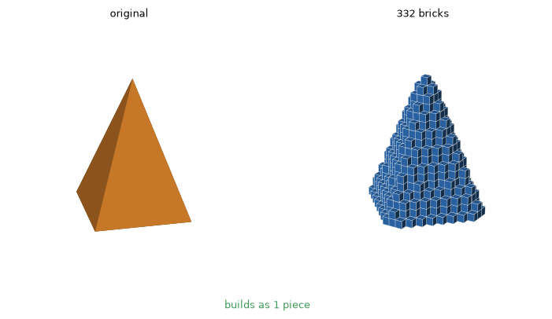
PASS 1p 588b
SPLIT 2p/1s 283b
PASS 1p 70b
PASS 1p 54b

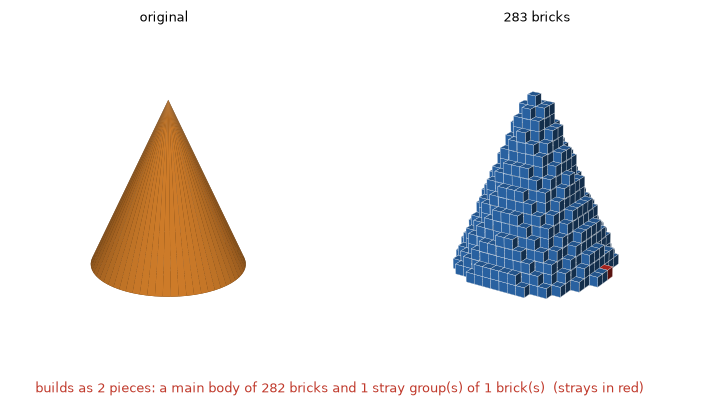
PASS 1p 527b 9f
PASS 1p 212b 4f
PASS 1p 81b 1f
PASS 1p 32b

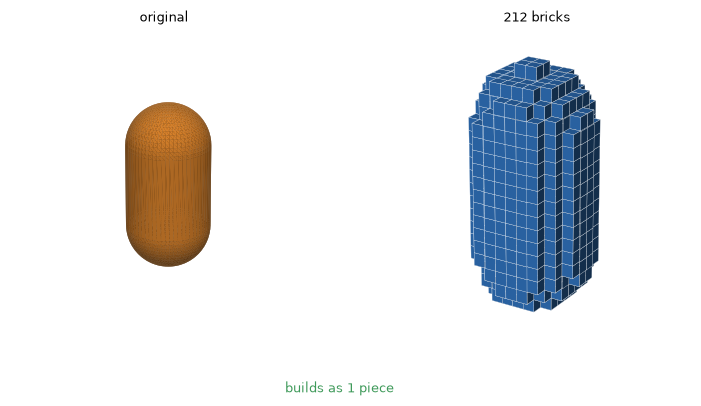
PASS 1p 1396b 21f
PASS 1p 631b 17f
PASS 1p 227b 8f
PASS 1p 92b 4f

PASS 1p 535b 21f
PASS 1p 270b 18f
PASS 1p 108b 7f
PASS 1p 52b 4f

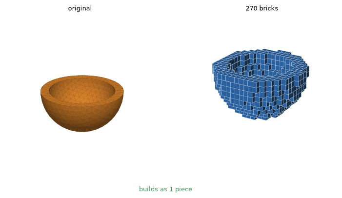
PASS 1p 502b 2f
PASS 1p 256b 3f
PASS 1p 88b 1f
PASS 1p 49b

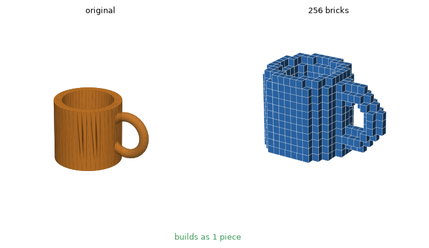
PASS 1p 521b 4f
PASS 1p 237b
PASS 1p 87b
PASS 1p 39b

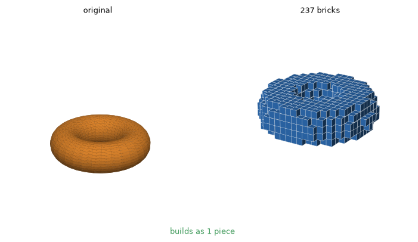
PASS 1p 266b 6f
PASS 1p 128b 2f
PASS 1p 51b
PASS 1p 18b

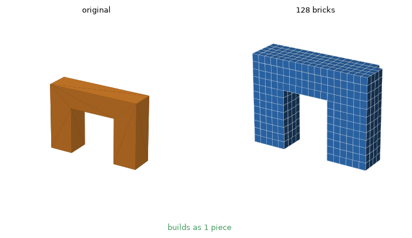
PASS 1p 564b
SPLIT 3p/1s 271b
PASS 1p 99b
PASS 1p 53b

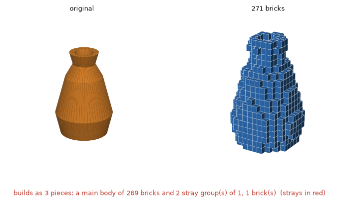
PASS 1p 203b
SPLIT 5p/1s 87b
PASS 1p 33b
PASS 1p 15b

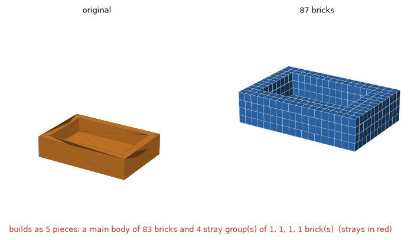
PASS 1p 382b 62f
PASS 1p 128b 34f
PASS 1p 93b 12f
PASS 1p 46b 5f

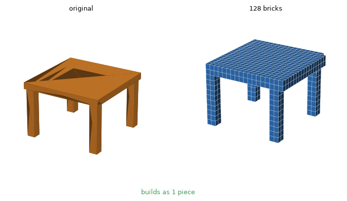
PASS 1p 157b 24f
PASS 1p 99b 9f
PASS 1p 50b 2f
PASS 1p 27b 2f

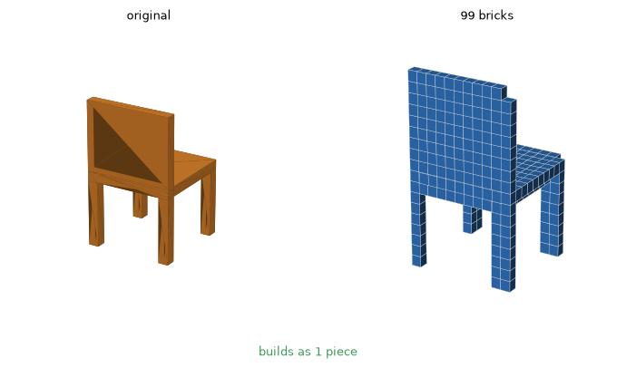
PASS 1p 169b 7f
PASS 1p 74b
PASS 1p 34b
PASS 1p 15b

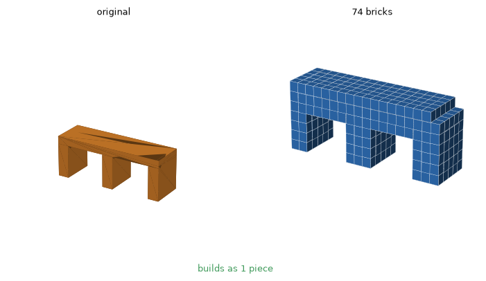
PASS 1p 111b
PASS 1p 47b
FAIL 3p/6s 18b
FAIL 3p/1s 6b 2f

PASS 1p 416b
PASS 1p 183b
PASS 1p 62b
PASS 1p 29b

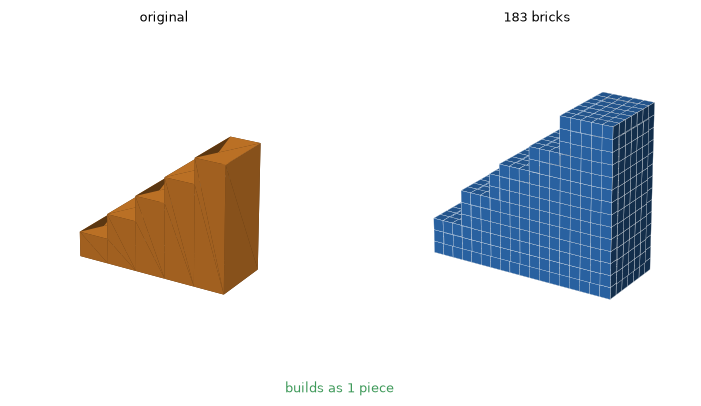
PASS 1p 144b
PASS 1p 67b
PASS 1p 41b
PASS 1p 11b

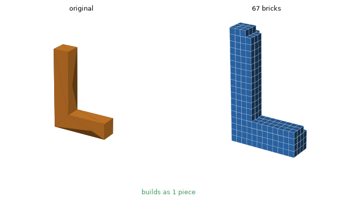
PASS 1p 249b 3f
PASS 1p 110b 1f
PASS 1p 72b
PASS 1p 28b

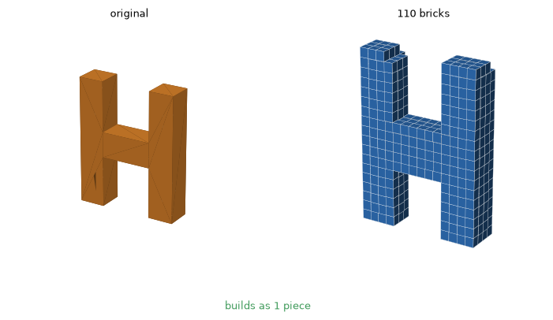
PASS 1p 72b
PASS 1p 18b
PASS 1p 23b
PASS 1p 9b

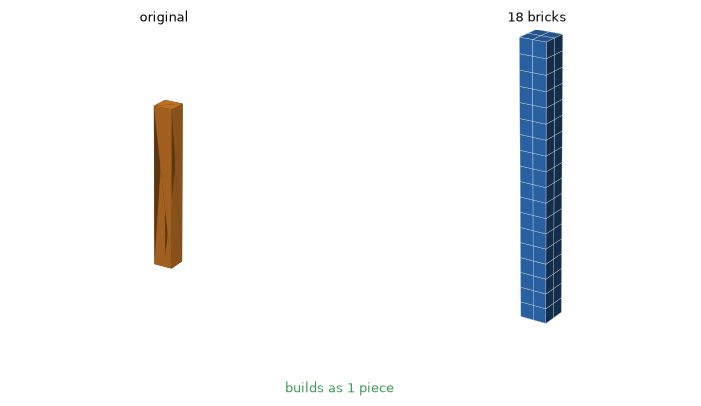
PASS 1p 553b 70f
PASS 1p 250b 45f
SPLIT 2p/1s 83b 18f
PASS 1p 44b 7f

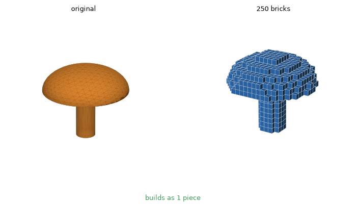
PASS 1p 126b 9f
PASS 1p 61b 6f
PASS 1p 25b 2f
PASS 1p 14b 1f

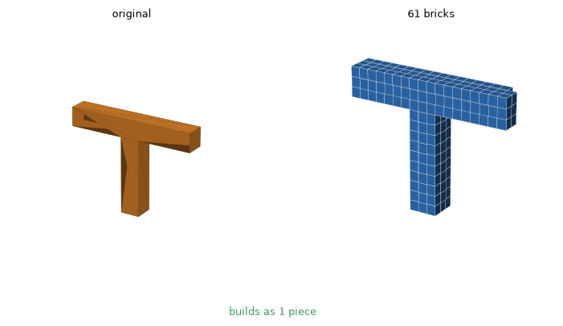
PASS 1p 509b 18f
PASS 1p 257b 14f
PASS 1p 88b 5f
PASS 1p 51b 3f

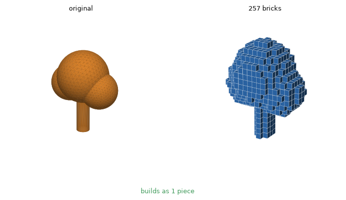
PASS 1p 350b 41f
PASS 1p 129b 24f
PASS 1p 58b 6f
PASS 1p 28b 5f

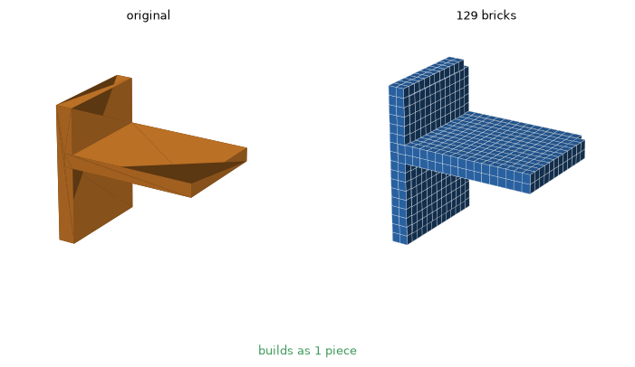
PASS 1p 796b 17f
PASS 1p 361b 7f
PASS 1p 128b 2f
PASS 1p 60b 1f

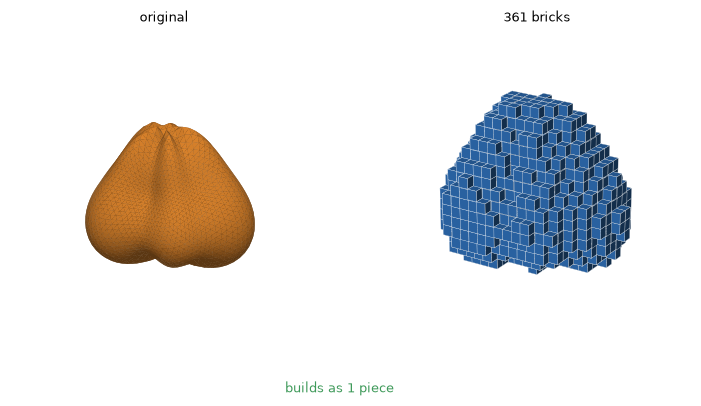
PASS 1p 315b 19f
PASS 1p 140b 7f
PASS 1p 47b 3f
PASS 1p 20b

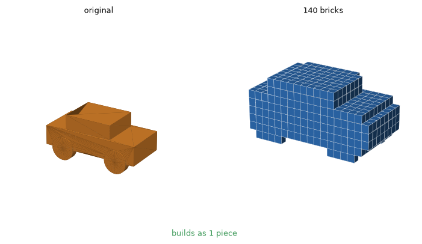
PASS 1p 369b 12f
PASS 1p 189b 8f
PASS 1p 73b 2f
PASS 1p 33b 1f

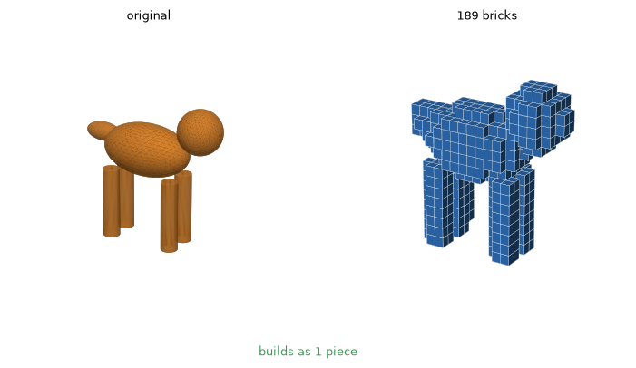
PASS 1p 855b
PASS 1p 362b
PASS 1p 118b
PASS 1p 51b

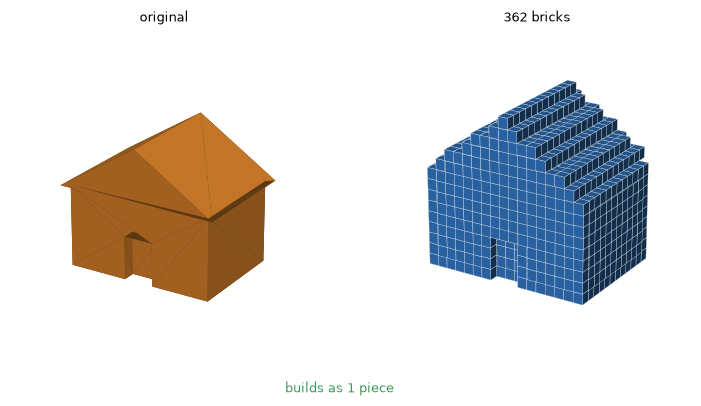
PASS 1p 1396b 21f
PASS 1p 631b 17f
PASS 1p 227b 8f
PASS 1p 92b 4f

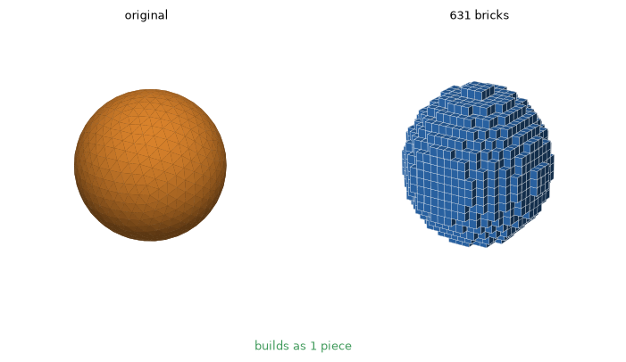
PASS 1p 1396b 21f
PASS 1p 631b 17f
PASS 1p 227b 8f
PASS 1p 92b 4f

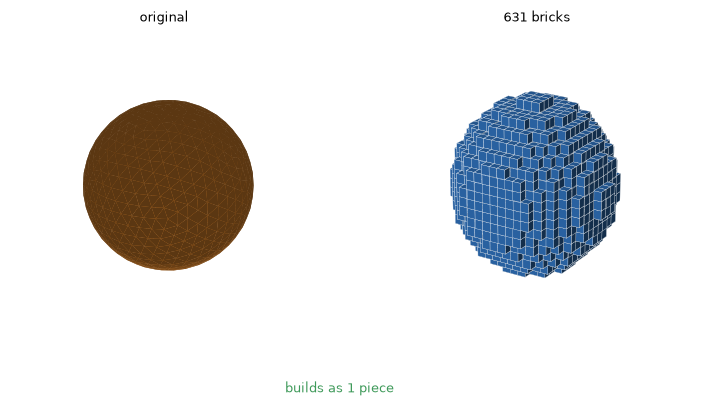
PASS 2p 125b 5f
PASS 2p 58b
PASS 2p 25b 1f
PASS 2p 17b

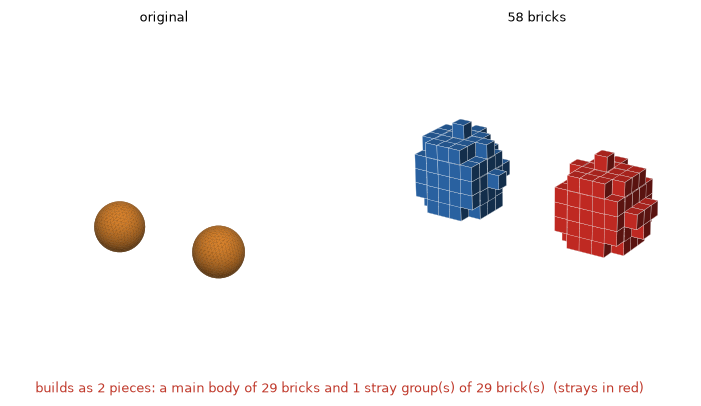